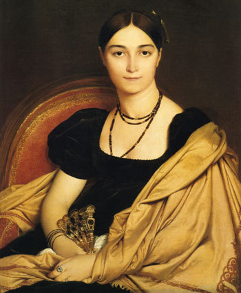
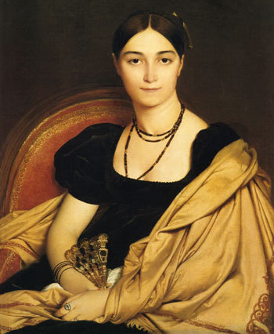

Eugénie Danglars
Family: Baron Danglars (father), Baroness Danglars (mother)
Eugénie is the daughter of Baron Danglars and Baroness Danglars. Her father arranged her first engagement to Albert de Morcerf and her second engagement to Prince Cavalcanti. Following the Count of Monte Cristo's revelation of Prince Cavalcanti's true identity and criminal record, she abandons her family and flees from Paris with her friend Louise d'Armilly in hopes of freedom.
 

Related
- Baron Danglars
- Baroness Danglars
- Albert de Morcerf
- Prince Cavalcanti
- Louise d'Armilly